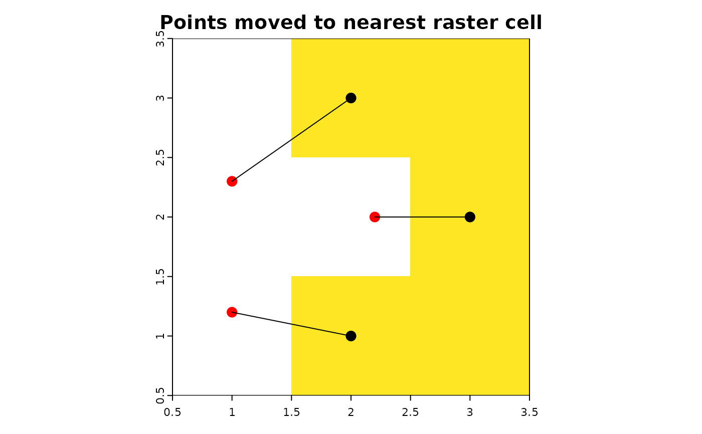
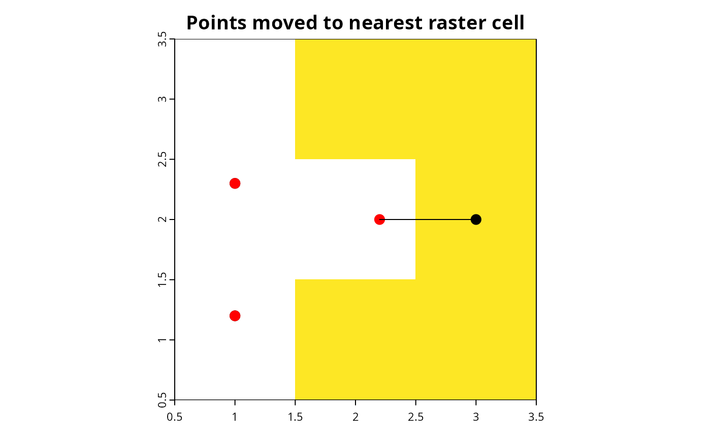

R/points2nearestcell.R
points2nearestcell.RdMove point occurrences falling in raster cells without data (NA) to the nearest raster cell with data.
points2nearestcell(
locs = NULL,
ras = NULL,
layer = 1,
move = TRUE,
distance = NULL,
table = TRUE,
map = c("base", "ggplot", "leaflet", "none")
)An sf::sf() or terra::SpatVector() object with point coordinates,
e.g. as generated from locs2sf() or locs2vect().
terra::SpatRaster() object.
Integer. Raster layer to use for comparing with point locations (default = 1).
Logical. Change coordinates of points to those of the nearest raster cells?
If FALSE, the function will show the nearest raster cells but coordinates of locs
will not be changed.
Numeric (optional). Maximum distance to move points.
Point coordinates are only changed if the distance to the nearest raster cell
is below distance.
Logical. Print table with old and new coordinates?
Character. One of "none", "base", "ggplot" or "leaflet", to choose
the type of map showing the old and new point coordinates. See occmap().
An sf::sf() or terra::SpatVector() object
(with corrected coordinates if move is TRUE).
## Generate example point coordinates and raster
locs <- data.frame(lon = c(1, 2, 1, 2, 2.2), lat = c(1.2, 1, 2.3, 3, 2))
locs.sf <- locs2sf(locs)
library(terra)
ras <- rast(nrows = 2, ncols = 2, xmin = 0.5, xmax = 3.5, ymin = 0.5, ymax = 3.5,
resolution = 1, vals = c(NA, 1, 1, NA, NA, 1, NA, 1, 1))
occmap(locs.sf, ras, pcol = "black", psize = 3)
## Move point coordinates falling outside of raster
moved <- points2nearestcell(locs.sf, ras)
#> 3 out of 5 points have been moved.
#> X Y X_new Y_new distance moved
#> 1 1.0 1.2 2 1 113377.05 [m] TRUE
#> 2 1.0 2.3 2 3 135632.95 [m] TRUE
#> 3 2.2 2.0 3 2 88901.89 [m] TRUE

moved
#> Simple feature collection with 5 features and 0 fields
#> Geometry type: POINT
#> Dimension: XY
#> Bounding box: xmin: 2 ymin: 1 xmax: 3 ymax: 3
#> Geodetic CRS: WGS 84
#> geometry
#> 1 POINT (2 1)
#> 2 POINT (2 1)
#> 3 POINT (2 3)
#> 4 POINT (2 3)
#> 5 POINT (3 2)
## Move points only if moving distance is lower than specified threshold:
moved <- points2nearestcell(locs.sf, ras, distance = 100000)
#> 1 out of 5 points have been moved.
#> X Y X_new Y_new distance moved
#> 1 1.0 1.2 1 1.2 0.00 [m] FALSE
#> 2 1.0 2.3 1 2.3 0.00 [m] FALSE
#> 3 2.2 2.0 3 2.0 88901.89 [m] TRUE
